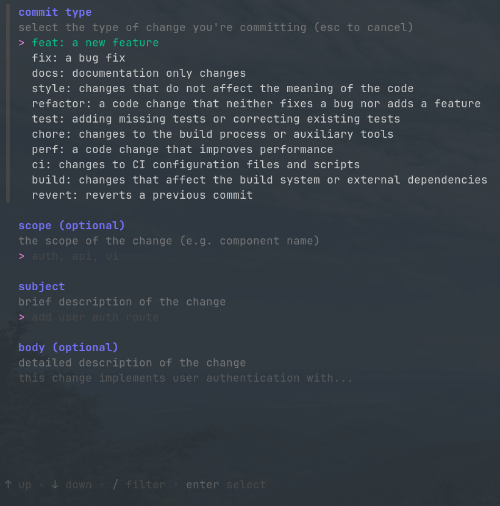

got
tui git staging manager and commit authoring tool in golang + bubbletea.
check out got on github
screenshot

features
- interactive staged/unstaged file management
- commit message authoring with lightweight guidance
- branch-aware flow for quicker context switching
- clean terminal-native workflow with minimal overhead
- linux toasts via notifier
status
active development, looking for commits.